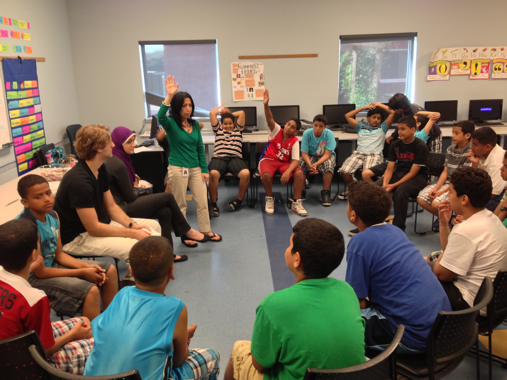

Mental illnesses can take many forms, just as physical illnesses do. Join the community and help make a difference to defeat Mental ilnesses.
What is Mental Health? Why is it important?
Mental health includes our emotional, psychological, and social well-being. It affects how we think, feel, and act. It also helps determine how we handle stress, relate to others, and make choices. Mental health is important at every stage of life, from childhood and adolescence through adulthood. Over the course of your life, if you experience mental health problems, your thinking, mood, and behavior could be affected. Many factors contribute to mental health problems, including: Biological factors, such as genes or brain chemistry.Life experiences, such as trauma or abuse and family history of mental health problems. This app is dedicated in gathering a community in which we can help solve our problems together. Help, discuss and learn more about Mental Health and its horrible stigma throught this app.

What does it effect?
Mental illness refers to a wide range of mental health conditions — disorders that affect your mood, thinking and behavior. Examples of mental illness include
depression, anxiety disorders, schizophrenia, eating disorders and addictive behaviors.Many people have mental health concerns from time to time. But a
mental health concern becomes a mental illness when ongoing signs and symptoms cause frequent stress and affect your ability to function. A mental illness
can make you miserable and can cause problems in your daily life, such as at school or work or in relationships. In most cases, symptoms can be managed with
a combination of medications and talk therapy (psychotherapy).